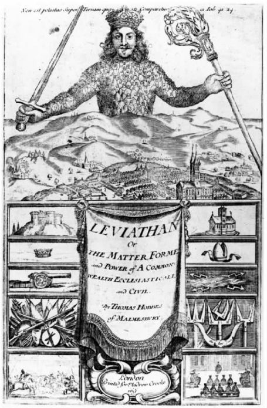
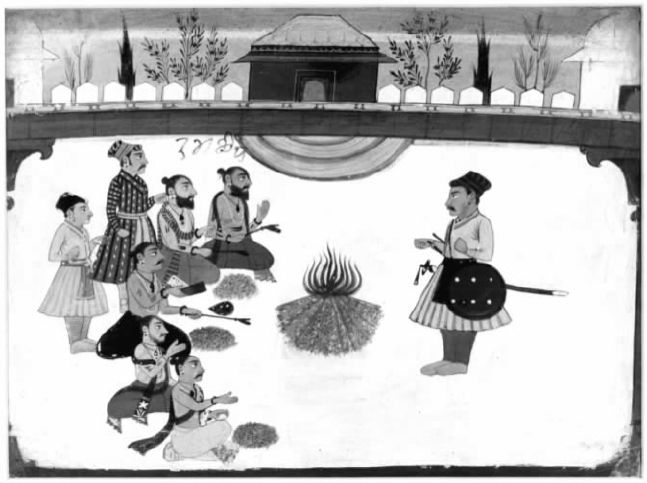
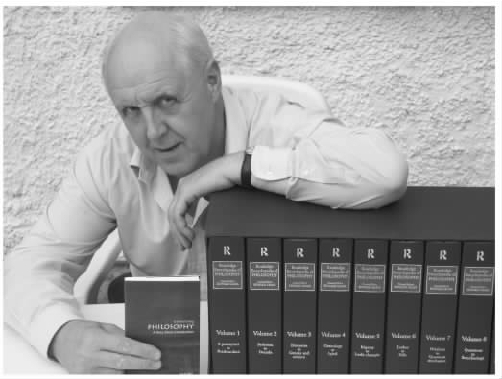
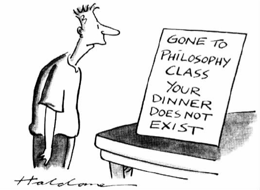

思考哲学是一项艰巨的任务——也许你已经注意到了。但是如果你坚持读到了这里，至少说明哲学还没有使你感到厌恶。要就哲学写点什么则更难（就我而言）。那么为什么人们还要思考哲学或者书写哲学呢？原因可能是以下一系列原因中的一种或更多种：希望学着控制自然，学着控制人类自己，进入天堂，避免下地狱；学会容忍生活本来的样子，或改变生活使其变得可以容忍；支持或反对政治机构、道德习惯或是知识机构；增强写作者的兴趣，增强其他人的兴趣（是的，那也会发生），甚至增强每个人的兴趣；因为他们不能忍受其他某些哲学家；因为他们的工作要求如此。有时也许只是出于纯粹的好奇。人们一般认为哲学家都是不食人间烟火，远离现实的。如果说的是哲学家的生活方式，这个观点往往是对的，尽管并非总是正确。如果那是指哲学家的工作，那么（我现在说的是能够永世长存 的哲学）这个观点又常常不对——哲学家们一般总是探讨人们真正关心的一些问题，提出一些真正的改进措施：至少从这个意义来说，这个观点是不对的。
回到本书的开头部分（第1页）我谈到了三大问题：我应该做什么？存在着什么？（即现实是什么样的？）以及我们如何知道？听起来似乎任何为人类提出真正改进措施的哲学主要关注的都应该是第一个问题。但那是不对的。对于现实是什么样的这个问题的看法可以赋予生活以意义，或是加强我们的自尊，比如认为我们是按照上帝的模样造出来的；这方面的看法还可以为某些类型的行为提供理由（或作为做出这些行为的借口），比如认为人类拥有理性的灵魂而动物没有。对“我们如何知道？”的回答可以加强或减弱第一和第二个问题的各种答案对我们产生的影响，并且很重要的一点是，这些回答中隐含着人们对哪些人 拥有知识这个问题的见解，人们相信知识显然为这群人带来了威望和权力。
其实，绝大多数哲学都试图为人类作点贡献。在本书的最后部分，让我们从这个角度来研究一下某些哲学。一种哲学思想要想历世永存，就需要一批支持者，即一批对这种哲学感兴趣的人。支持者越多，哲学持久传承的机会就越大。我们先来谈一谈一些为个人服务的哲学思想。这些哲学思想拥有大批的支持者，因为我们每个人都是个人。
伊壁鸠鲁的哲学思想（参见第五章）是针对个人而言的，它为个人提供快乐生活的方法，而且这种方法是有论据支持的。社会和政治制度如果妨碍个人为快乐生活所作的努力，就是不公平的，伊壁鸠鲁在政治方面的唯一建议就是劝大家不要涉足政治。在某种程度上，我们可以帮助其他人过适合他们的生活，但只限于那些与我们关系亲密的人（伊壁鸠鲁主义大力提倡友谊）；每个人都必须遵循各自快乐生活的方法。因为成功并非取决于物质条件，即一个人可以为另一个人安排的事情，而是取决于人们对待物质条件的态度。这就是关键所在，因为当你明白自己现时的心境基本不受后续生活影响时，快乐便产生了。
图15现实生活中的伊壁鸠鲁主义？并非伊壁鸠鲁意义上的伊壁鸠鲁主义。
伊壁鸠鲁认为快乐是唯一的善，当你听到这一主张时也许会感到吃惊。我们能得到多少快乐，这一定是极度依赖物质生活条件吗？但是还有第二件令人惊讶的事情：他认为最大的快乐是远离肉体疼痛与精神焦虑。容易达到的简单的快乐并不逊于奢侈的、具有异国情调的快乐，并且靠后者得到的快乐会诱发焦虑：获取这种快乐的途径可能会被夺走。（有人认为伊壁鸠鲁主义就是指有歌舞相伴的持续很长时间的晚宴——这种观点完全是误导，这肯定是从伊壁鸠鲁的反对者那里传来的说法，这样的反对者不计其数。）
许多精神混乱都源于因迷信带来的恐惧。应该消除这种恐惧。应该认识到完全生活在幸福之中的神没有必要、也不希望干涉人类的事情。努力学好物理学、天文学以及气象学知识，然后就可以确信所有现象都能从自然的角度得到解释——它们不是神灵发怒的征兆。另外，不要害怕死亡，因为死亡只是不存在而已，并没有什么好害怕的。总之，那就是伊壁鸠鲁给我们每个人的忠告。你可以不听从他的忠告，甚至反对他的建议。当然如果我们都那样的话，政治家也就不会出现了；但是也许我们可以容忍没有政治家。
伊壁鸠鲁教导个人要在思想上武装起来，以面对任何可能发生的事情。两千多年后，约翰·斯图亚特·密尔写下了激动人心的话语，来捍卫每个人自由生活的权力。在他著名的作品《论自由》（1859）中，密尔为众所周知的伤害原则 进行辩护：“权力能够对文明社会的任何成员正当行使的唯一目的……应为阻止对他人的伤害。”欧洲和美洲的民主政治制度得到进一步完善的同时，也赢得了更充分的理解。密尔则指出了一种潜在的危险：多数人对个体和少数群体的专制。
作为《功利主义》的作者（见第五章），密尔对人权没有兴趣，而是对那些由于不遵守他的原则而导致的损害和价值损失抱有兴趣。主宰自己的生活对人类而言是一种善，是我们的幸福之一，所以即使法律禁止的事情是个人无论如何都不会去做的，个人也会遭受损失。但是整个社会也会遭受损失。伤害原则所保护的人之所以是极其宝贵的资源，正是因为他们有脱俗的观点和不同寻常的生活方式。如果这些人的意见实际上是正确的，他们的社会价值就是显而易见的。如果他们的意见是错误的，其社会价值不会那么明显，但同样真实：如果人们完全拥护真理，真理就会成为人们口头的死公式——对真理的反对保证了真理能够一直活跃在思想中。至于不合常规的生活方式，它们提供了每个人都可以学习的经验数据。制约个体最终会损害到每个人。
前面（第二章，然后第五章又简单提及，第55页及其后）我们谈到了所谓政治义务的契约理论。在柏拉图的《格黎东篇》中我们又看到了契约理论的运用，并且注意到根据对以下问题的不同回答，原则上契约理论会以多种形式出现：在什么条件下，为了做什么事情，谁与谁订立了契约？
在所有的契约理论中，托马斯·霍布斯（1588—1679）的理论也许是最有名的——若果真如此，那是因为他对“自然状态”作了绝妙、真实的描述。在自然状态中，任何社会制度都没有建立，没有人能拥有、耕作自己的东西或者做任何有建设性的事情而不时时担心遭到攻击和抢劫，人人都有可能被谋杀。只要这种“一切人反对一切人的战争”持续，生活就是“孤独、贫穷、令人厌恶、粗暴和短暂的”。那么如何改善这一状况呢？组织一个机构；同意接受某个“统治者”（个人或机构）的权威，赋予其充分的权力来完成任何他们认为有必要的事情，以保护我们免受来自他人或外部世界的威胁。这个统治机构不会做不公正的事情，因为作为大家公认的代表，它所做的一切都假定已经获得了签订契约各方的同意。公民只有当生命遭到统治者的直接威胁时才会进行抵抗——公民签订契约的首要目的就是为了保全生命。回头看看，即使是“雅典的法律和宪法”（《格黎东篇》50e—51c，前文第21页）也不会允许苏格拉底因为生命遭到威胁而反抗统治者，只是给出了极少的理由来支持这样极端的主张。
霍布斯笔下的公民难道不会回答他们不只是为了保住性命才签订契约的？他们这么做是为了享受各种自由，在自然状态下这些自由都是缺失的。这将意味着在公民的生命受到威胁之前，他们就获得了抵抗的权利。（再说，在交出所有的权力之后，他们怎么来保护自己的生命呢？）和柏拉图一样，霍布斯似乎也超出了自己论点论述的范围，但实际上这并不令人感到惊讶。柏拉图青年时期适逢雅典对抗斯巴达的那场灾难性战争。而霍布斯出生之时，西班牙无敌舰队正入侵英格兰，临近世纪末的那场宗教冲突则夺走了数百万人的生命。壮年时期他又目睹了英格兰陷入内战的纷争之中。难怪两人都认为，政治生活首先需要有强大的政府来维持和平与秩序，没有这两样其他一切东西都无从说起。他们支持个人的方式是将全部统治权交给国家。难怪一些人认为他们做得过头了。约翰·洛克（1632—1704）写作的年代比霍布斯晚了不到五十年，所处的政治环境也要宽松一些。他辛辣讽刺道：
神父通常不是富有之人或是掌握军事权力的人。因此赋予他们安全以及于安全之外往往还赋予他们在社会或宗教团体内部的极大权力的，肯定是其他东西。这种东西源于周围的人对神父的看法 ，认为神父能为自己做的事情，以及他们赋予神父的价值。换句话说，神父的安全和权力源于哲学。利益与危险越隐秘越间接，维持对神父的信仰、保持对授予（转移）神父权力和安全的人的忠诚所需的机制就越强大。
这不是故意欺骗——尽管认为这样的事情从未发生过也是荒谬的。这甚至也不是神职人员让普通人信仰他们是对还是错的问题。关键是必须相信一点：若非如此，便没有神父。所以存在着大量提升神父地位的著述。
到处都有这样的例子。既然在前面几章我们没有谈及西欧以外的地方，那么现在就让我们回到印度，看看一部重要的《奥义书》 [1] 的开头部分。《弥兰陀王问经》写就的时候，《广林奥义书》（见参考书目）可能早已出现，就像今天乔叟 [2] 的《坎特伯雷故事集》一样古老。《广林奥义书》属于印度教的吠陀经 [3] ，一个充满宗教仪式、牺牲和颂歌的世界。仪式、牺牲和圣歌这些东西对我们很有好处，尽管必须要正确举行才行。为了确保正确举行，你需要一个精通吠陀事务的专家；对于那些重大仪式，甚至需要专家中的专家来保证其他专家能正确行事。这样的专门技术应当被赋予应有的尊重，当然也少不了适当的报酬。［“希望我富有，这样就能举办仪式”被认为是每个人的愿望（1.4.17）］。这种技术——以及附带的额外收入——是特殊的社会阶层或等级婆罗门的（世袭）特权。这种种姓制度不是简单的社会习俗，正如1.4.11节告诉我们的那样——很显然这种制度起源于神自身被创造的方式。仔细阅读1.4.11节：注意种姓制度如何将一定的优越地位赋予处于统治地位的贵族武士阶层刹帝利 [4] ，同时又保留婆罗门的某种优越的。婆罗门的权力是统治阶级权力的“子宫”——后者的权力发源于此。所以武士伤害祭司是愚蠢的，因为这是在伤害他们自己权力的来源。这就是哲学和神学，显然也是很好的实用政治。

图16霍布斯笔下的海怪从英国乡村连绵起伏的山丘上升起，任何其他事物都相形见小。但是这样真的安全吗？难怪洛克感到十分担心。（图中文字自上至下为：《利维坦》或物质、形式，以及基督教会联合体的权力；来自马姆斯伯里的托马斯·霍布斯著。）
刚接触这种思想传统的读者会发现许多惊人的陌生观点。有关于用作祭品的马（这是吠陀最珍贵的祭品）身体的各个部分与世界的构成部分——年份、天空、地球——相对应的学说。有对语源学的信仰。如果可以看出一个长词是由——大致上——两个短词组合而成的，那么不管这个长词描述的是什么，组合构词这一事实都可用来表示长词所描述之物的起源或本质。《广林奥义书》反复强调，知道这个奇怪知识是非常有利的：“知道此事的人不管到哪里都能坚持自己”；“知道此事的人，……不会死亡……将会变成神。”所以我们应该重视这个知识，而且应该重视它的捍卫者——祭司。
祭司并不总是可以为 你做些什么——他还可能对 你做些什么。不要与婆罗门的妻子发生暧昧关系。《广林奥义书》的第6.4.12节讲得非常清楚，婆罗门知道报复你的仪式。“被知道如何诅咒的婆罗门诅咒的男人肯定会离开这个世界，被剥夺生殖能力，被剥夺好手艺……千万不要调戏深谙此道的婆罗门的妻子，以免和他们结怨。”这里已经警告大家了。

图17印度邦主向祭司请教。
当然了，我们不仅需要神父，我们还需要医生、清洁工、电玩展示人员、广告顾问，还有——我差点忘了——哲学教授。由于人们拥有信仰和价值观、希望和恐惧，这些人都需要存在。
西欧的工业化给少数人带来了财富，给多数人带来的却是悲惨的生活。这多数人很快就找到了一个维护他们权利的人：卡尔·马克思（1818—1883）。毫不夸张地讲，世界上任何一个存在政治的地方其政治面貌都因马克思的努力而改变。马克思的影响直到过去的十年中才开始衰退。它可能是自身成功的受害者——毕竟，任何对理论的检验和真正的尝试都是不一样的。（这一原则解释了实验方法在科学中的巨大威力。）除非有很多人都已经信服，否则不可能对任何政治理论进行真正地实践。
在此，我们有机会发现某些贯穿于整个哲学史的互相关联的事情。马克思不是黑格尔的弟子——他甚至强烈反对黑格尔的某些观点。但是当时没有人不受到黑格尔哲学的影响。与黑格尔相同的是，马克思也认为历史展示了一种必然的进步；与黑格尔不同的是，他认为历史前进的动力是经济：物质生活条件。与黑格尔相同的是，马克思认为发展从根本上来说是矛盾得到了解决；但矛盾是不同社会阶层之间在经济利益上的冲突——这就是马克思主义著名的“阶级斗争”。而且我们认为马克思所说的一个观点对黑格尔来说也非常重要：与你自己的“他者”保持联系有极大的价值。“他者”，就像我们常说的，是“某种包含着你的一部分的东西”。
在分析当代经济体制时，马克思充分利用了这个观点。当代经济体制的主要特征是工人阶级和“生产资料”（即工厂）所有者资本家之间的利益冲突。他坚定地同情当时的受压迫者——工人。关键是，工人需要谋生，但是他们没有其他东西可以出售，于是便出卖自己的劳动力——用劳动来换取工资。工资并不多，那些购买工人劳动力的资本家没有兴趣多给工人工资，所给的仅够工人用来维持持续劳动。这就导致工人及其家人只能过着贫困、低劣的生活。
另外，这种情形更在精神上重重地压迫他们——事实上他们所从事的工作并不真正是他们的 工作：“对工人而言，工作是外在的东西，不是其本质的一部分……不是满足自身需要，只是满足其他需要的一种手段……在工作中，他不属于自己，而是属于别人。”正因为工人的需求无法满足，他们才需要在所从事的工作中表达自己 。
诊断是一回事，治愈则是另一回事。当一个人所从事的工作不是自己的而是国家的，就像不是自己的而是公司的之时，这个人就可能会体会到异化。当社会庞大而复杂时，对社群利益的认同就不容易实现或维持。即使能认同，那也只能使工作变得可以忍受 而已。如果你的工作是站在传送带旁，拧紧果酱罐的盖子，那么为祖国母亲俄罗斯工作就要比为全球果酱公司工作更容易忍受。但是那样做无论如何都不能使事情变得积极，成为表达你的个性、技能或者开发潜力的手段。今天我们讲“工作成就感”，但并不是每个人都能在工作中获得成就感——这个问题一直存在着。
我们从一个话题跳到另一个话题，从一个人跳到另一个人，穿越全世界，跨越三千年，就像组团旅行发了狂似的。除非人们略为深入地了解某个哲学家的思想，至少深入一回，否则是不能进入哲学王国的。我们已经大致了解约翰·斯图亚特·密尔的两部著名作品：《功利主义》和《论自由》。第一本书告诉我们善就是快乐，第二本书告诉我们自由才能使个体获得快乐。在另一篇差不多同样著名的文章《论妇女的从属地位》（1869）中，他告诉我们，这对每个人来说都一样，不仅仅是对成年男子。
密尔实际的政治观点瞄准了一个非常具体而且（至少在理论上）容易矫正的弊端：“一种性别在法律上从属于另一种性别，这本身就是错误的，而且现在成了阻碍人类进步的主要因素之一；……应该用完全平等的原则来取代。”他认为当前的家庭法相当于对妻子的奴役。他的话表达的就是字面上的意思，正如他在第二章中描述法律地位时所表现的那样。然而，他想改变的是一系列，它们剥夺了妇女接受平等教育与获得重要工作以及职位的机会。
任何主要的哲学思想都需要潜在的受益对象，即使利益可能只是假想出来的。为了提高女性的地位，密尔要吸引大量的受益对象。但他相信，支持他观点的将是百分之百的人，而不仅仅是百分之五十。他描写了女性遭受的不公正待遇，以及现有条件对她们的生活造成的损害，但他同时也用了几乎相当的笔墨，描写了这种状况给所有人带来的损失。压抑女性的才智是“对她们的专制，对社会的损害”。历史告诉了我们许多女性能做到的事情，因为她们已经做到了。历史没有告诉我们女性不能做到的事情，而且除非一直有机会，历史永远也不会告诉我们。（正如我所写，一百三十多年后，一位年轻女子在一次单人环球航海比赛即将结束时处于领先位置，而参加这项赛事需要超乎想象的毅力、体力和智力。）
密尔还认为，作为个体，男人经常在不经意中（这本身就是损害的一部分）遭到损害。如果一个人从小就被教育认为自己比他人优越，那是不好的，尤其是当他人的能力实际上比自己强的时候——这种情况经常发生。从另一方面来讲，听起来也许有些残酷的是，和那些比自己“能力和教养”都要差的人亲密地生活在一起，对较优秀的人是有损害的。然而许多男子会发现自己正处于这样的情况之下。与他们结婚的女子缺陷明显，因为这些女子是在完全有害的体制下强制生产出来的人工制品。那些男人也许认为自己是赢家，但事实上每个人都是输家。
谢天谢地，自1869年起事情已经有了改观，很少的、在世界某些地方发生的、暂时的改观。
如果我们的话题只是围绕男人所写的东西，也许会令人感到奇怪。很明显，我们有义务转向另一个话题。西蒙娜·德·波伏娃的鸿篇巨制《第二性》（1949）自问世以来已经激励了许多女性从事写作。如果允许我在约两百年之后短暂复活，当我发现这本书被评为20世纪最具影响力的书籍之一时，我是不会感到惊讶的。
与密尔一样，波伏娃也关注女性的自由问题；与密尔不同的是，她没有特别关注自由和快乐之间的联系。她否认存在有关女性状况的有趣概括，因为女性的状况反映了她们所处的环境，其中有一些是社会环境，因此充满变数。（密尔似乎觉得可能存在一些这样的概括，但认为没有一个为人所知。）此外，波伏娃从存在主义传统出发，认为对环境的反应是我们每个人的自由选择——假装我们完全被环境所主宰是不真实的，是在逃避责任。
本书的篇幅只允许我涉及这部始终生动的巨著的一个主题。在第七章我谈到了黑格尔的巨大影响，并提及了他的自我认识学说：当一个人在其他东西，即一个人的“他者”里发现了自己的其他方面时，自我认识便出现了。抓住其中的心理真相，并完全忽略黑格尔宏伟的形而上学，波伏娃于此发展了她最有特色的学说：女性是男性的“他者”，且双方的自我了解都取决于这一点。
当“他者”本身就是一个主题、一个人时，事态就会变得更加复杂，潜在的损害也更大。我正在看着你看着我看着你……A如何看B会影响B，因此它会改变A在B身上发现的东西。这又（回想一下关于自我认识的学说）改变了A对A自己的感知，然后影响到A，这两点都会影响A如何看B……只此一次某些事情就发生了严重错误，正如当男人奴役女子时，认为这对他而言是件好事，而女子接受奴役，以为那是她们唯一的选择，两性之间的关系就会纠缠在一张人造的错误之网中。现在“无论他做什么……他都觉得受到了欺骗，而她则感到委屈”。互惠的关系意味着没有一方能单独纠正错误：波伏娃同时呼吁男人要承认女人的独立和平等，而女人则要坚持独立、平等，并认识到自己本来就应该如此。
所以最后一页有这样一句话，这句话尽管完全体现了波伏娃的特点，但几乎就是密尔写的：“当我们废除了半数人类的受奴役状况以及这种状况中隐含的整套虚伪制度时，人类的‘分类’将揭示出自己真正的意义，人类夫妇将找到自己真正的形式。”他，从经验主义和功利主义传统出发；她，有着完全不同的黑格尔哲学及存在主义背景，但两人殊途同归。这几乎使你觉得他们可能是正确的……
任何有志于改善动物——非人类的动物——状况的人一开始都会面临一个问题：动物不会阅读。所以这方面的写作者不得不说服的将是与受益对象大相径庭的读者。这需要采取一两个策略：或者求助于他们更好的本性，或者说明他们也会获益。在努力让普通人支持神职人员的时候，我们看到的是第二种策略在起作用；在努力获得男性对女性解放事业的支持的时候，密尔和波伏娃两种策略都利用了。
如果你求助的大部分人都从你正努力消除的行为中受益或者认为自己会受益，情况会变得更加无望。许多人喜欢吃肉，许多人还认为通过动物医学实验，人类可以获得极大的好处。当女权主义作家试图挑战男人的观点时，也遇到相同的问题，但至少这些作家在女性中获得了直接的支持，而“动物保护主义者”根本就没有直接的支持者。
佛教不走极端，很自然对动物采取保护态度。我说“很自然”，是因为佛教保留了印度教的观点，认为灵魂可以反复回归到生命中去，而且这次化身为人，下次也许就会化身为动物。佛陀自己就曾经是一只野兔。基督教没有这样的玄学，也没有这样的顾忌——去问一只印度奶牛，玄学是否重要！上帝创造亚当主宰其他动物，动物都是为人而造。我们有理智的灵魂，但是动物没有，因而它们被排除在道德的范围之外。［持此观点的人中就有圣·托马斯·阿奎那（1225—1274）］其中一只动物跑啊跑，休谟拍了它一下（参见前文第28页），但是它仍然跑啊跑。
作为密尔拥护并发展的功利主义的创始人，杰里米·边沁（1748—1832）在道德上拥有决定权，这令他既痛苦又高兴，而且他就动物发表了一段著名的言论：“问题不在于‘它们是否能推理？’也不在于‘它们是否能说话？’而在于‘它们能否感到痛苦？’”（它们当然可以，所以它们进入到功利主义的等式中，在道德上我们对它们也有责任）。不过，那是讨论人类福利的一本书中的一个附带段落。只是到了最近，我们才开始得到整本的书，其中明确谈到关于我们如何对待动物的道德问题（见参考书目），这一事实也许能反映出作者们在策略方面所处的复杂环境。
在过去二三十年中，他们的学说已经取得了巨大进步——策略问题并非不能解决。他们可以向那些总是认为动物身上也有人类特点的多愁善感的人求助。他们可以向现代生物学求助；现代生物学提供了更加确定的事实，说明我们与动物的关系比阿奎那想象的远为亲密，这比休谟所能做的更具有说服力。他们强烈地呼吁人们的良知，发出边沁式追问：是否因为能给人类带来好处就可以让动物受苦？如果可以，那么在什么时候？因为你也许能体会到，虽然做实验的白鼠死了，但癌症的治疗方法有了显著进步，这与用狗和熊窝里熊的死亡来换取几分钟的运动娱乐之间是有区别的。
动物福利的某些方面关乎另一个紧迫的问题——对自然环境的损害和关爱。对于这个问题的一方面，即素食主义，有时人们是这样看待的：用植物原料喂牛再吃牛肉，与直接吃蔬菜不吃牛肉相比，被认为是一种非常低效的利用地球资源的方式。所以从长远来看，素食主义对每个人都是有利的。主意不错——人们听得越多，谈论的要点就越多。
你应该已经注意到，也许带着一丝惊奇：尽管我现在在书写哲学，但我几乎没有谈到哲学。我不怀疑其中一些哲学思想是有价值的，而且会长存。我更不会怀疑现在发表的东西中只有很小一部分会持久流传。我能猜到一两本能长存的书的标题，但是猜想终究只是猜想；所以我最好还是关注那些已知的经受过时间真正考验的作品。这些作品能够经受住考验的原因之一是，它们是有感而写，内容对人类是有好处的，而且我们能够体会到其中的热情和智慧。
没有理由认为当今的哲学著述不应该如此，而且其中的一部分的确是这样的。但我们应当注意到，大多数哲学著述都是由职业哲学家所写，他们的生计和职业前途要求他们撰写和出版此类文章。这一点并不能说明 什么——毕竟，康德和黑格尔都是职业哲学家。这当然并不表示他们对哲学的兴趣不是真的，但这的确意味着，在让他们感兴趣的种种原因中，有些我会认为是假的。在第一章我曾说过，哲学家参与辩论是为了改变文明进程，不是为了解开一些微小的谜。但在如今职业化的哲学世界中，谜的完美解决需要作者付出很大的精力；对其他的职业哲学家来说，为解谜而进行写作的诱惑和压力都有，至于文明就让它自然发展吧。
不应该将这本书——拜托！——理解成是对现在大学哲学系中出现的所有现象 的全面谴责。这只是一个很简短的介 绍 ，为第一次接触哲学的人提供一些建议。如果你正在翻看某个学术出版社的最新哲学书籍，或是最近一期的顶级哲学专业杂志，然后发现自己看不懂其中所讲的东西，或是没有什么能引起你的注意，不要以为整个 哲学你都不懂。你现在看到的可能是大画面中的一个小细节，你只是还没有识别的经验。也许情况更糟糕，你所读的对哲学家而言其实就相当于一个国际象棋方面的问题，非常巧妙但没有普遍意义。发挥自己辨别能力的同时，请坚持阅读那些优秀的经典作品。

图18一位职业哲学家——对此人要略有防备。
对于我向你们介绍的任何一个哲学家，不必产生前述疑问。众所周知，他们都是在用心力和智慧来写作。他们有无数优点，同时他们也会有缺点，这一点可以肯定：意料之外的无知、偏见、自负、晦涩——这些只是一小部分而已。但是正如我希望自己已经在文章中表明的那样，哲学同生活一样的广泛，在其巨大的文库中，有着最富智慧的美德，同时也有最富智慧的瑕疵。希望哲学只有美德没有瑕疵，就如同希望人类没有思想一样。

图19上哲学课就没有晚餐吃。